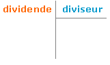
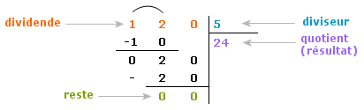

.gif)
Diviser quelque chose signifie séparer en plusieur parties; c'est parties sont le résultat de la division d'un
nombre sur un autre, donc pour diviser un nombre nous sommes besoin du nombre a diviser est le diviseur sur le quel on divise.
on peut dire que la division est l'operation inverse de la multiplication le meme cas dans l'addition et la soustraction
Exemple: S'il y a 9 bonbons et 3 enfant ,et vous devriez offrir le même nombre de bonbons a chaque enfant.
Maintenant, utilisons la division pour résoudre ce problème. Nous divisons le nombre de bonbon sur le nombre d'enfant. Si nous divisons 9/3, nous obtiendrons le nombre de bonbon pour chaque enfant,(remarque: 3x3=9) soit 9/3 = 3 bonbons. Ainsi, nous pouvons voir que nous obtenons le même résultat dans une période de temps plus courte.
Dividende x Diviseur =Quotient; où:
Pour poser une division, on place le dividende en haut et à gauche de la barre verticale. On place ensuite le diviseur en haut et à droite de la barre verticale. On trace un trait horizontal sous le diviseur pour le séparer du résultat que l'on inscrira en dessous.
Pour effectuer une division :
On cherche par quel nombre on doit multiplier le ou les premiers chiffres du diviseur pour trouver un nombre
inférieur ou égal au nombre composé par le ou les premiers chiffres du dividende.
Le nombre trouvé doit être le plus proche possible du nombre composé par le ou les premiers chiffres du dividende.
On place ce chiffre au quotient et on le multiplie par le diviseur.
On soustrait le produit obtenu à la partie du dividende correspondante.
On abaisse le chiffre suivant du dividende à droite de la différence obtenue.
On applique au nouveau nombre les mêmes étapes que précédemment.
Exemple: 120÷5=24
On peut vérifier le résultat d'une division.
Pour cela, il faut multiplier le quotient et le diviseur.
On doit normalement retrouver le dividende.
Exemple:24x5=120
Amusez vous a calculer des valeurs et tester vous résultats ici :)